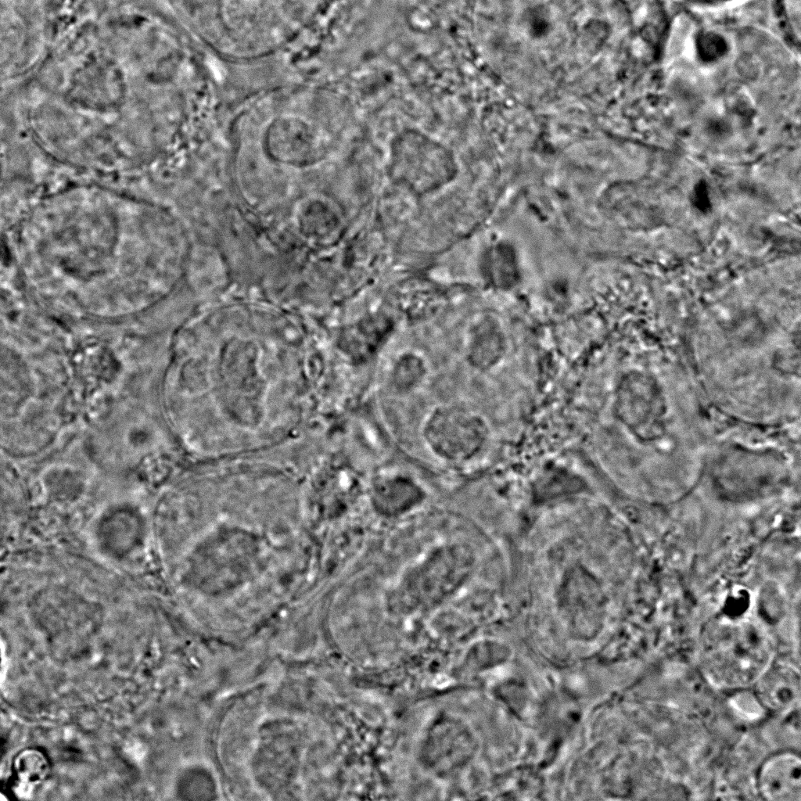

Broad Bioimage Benchmark Collection
Annotated biological image sets for testing and validation
Induced pluripotent human stem cells
Accession number BBBC034 · Version 1
Example images
-
-
-
-

Description of the biological application
Segmenting nuclei in 3D images can be challenging especially when nuclei are clustered and have different intensity. This image set contains a clustered monolayer of nuclei that can be difficult to segment and is provided along with manually annotated ground truth that can be used for image analysis software testing purposes.
Edge and center regions of the same cell colony can have different morphology and intensity. Analysis of 3D images can provide a complete picture of such differences. Two of the image sets contain clustered monolayer of cells at the edge and center of the hiPSC colony.
Images
Images were obtained by using Zeiss AxioObserver microscope with C-Apochromat 100x/1.25 water immersion objective and Hamamatsu ORCA-Flash 4.0 camera.
- Channel1 (AICS-12_134_C=0): CellMask Deep Red plasma membrane
- Channel2 (AICS-12_134_C=1): GFP edited channel
- Channel3 (AICS-12_134_C=2): DNA channel
- Channel4 (AICS-12_134_C=3): Brightfield
- Width = 66.56 microns (1024)
- Height = 66.56 microns (1024)
- Depth = 15.08 microns (52)
Center and edge colony images
- Channel1 (C=1): CellMask Deep Red plasma membrane
- Channel3 (C=3): EGFP beta-actin
- Channel5 (C=5): Hoechst DNA
BBBC034_v1_dataset.zip (572.2 MB)
Ground truth B
Ground truth 3D image contains manually annotated and segmented nuclei. There are no ground truth images for the center or edge colony images.
BBBC034DatasetGroundTruth.csv (872 KB)
For more information
These images were generated by the AICS Microscopy & Image Analysis Team at the Allen Institute for Cell Science in Seattle, Washington. Please contact Derek Thirstrup for more information.
Published results using this image set
The proposed data set will be evaluated in a publication to be submitted.
Recommended citation
"We used image set BBBC034v1 Thirstrup et al. 2018, available from the Broad Bioimage Benchmark Collection [Ljosa et al., Nature Methods, 2012]."
Copyright
These images are under copyright by the Allen Institute for Cell Science. Contact terms@alleninstitute.org for more information about the copyright.